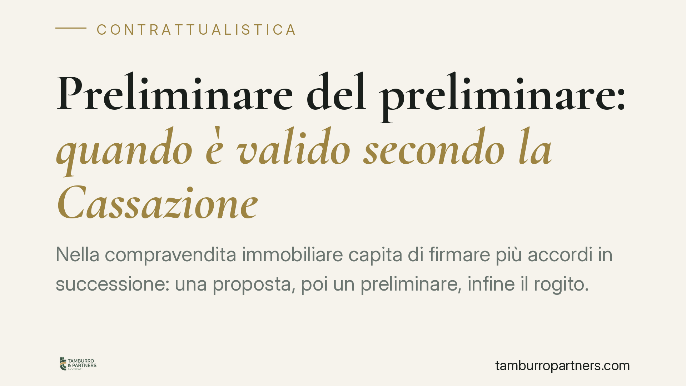

Preliminare del preliminare: quando è valido secondo la Cassazione
Nella compravendita immobiliare capita di firmare più accordi in successione: una proposta, poi un preliminare, infine il rogito. Ma il primo accordo, il cosiddetto "preliminare del preliminare", vincola le parti? Le Sezioni Unite della Cassazione hanno chiarito che sì, a certe condizioni. Vediamo quando e con quali conseguenze in caso di ripensamento.

Il fatto
Nella prassi immobiliare la trattativa raramente si conclude in un solo passaggio. È frequente che, prima del preliminare vero e proprio (il cosiddetto "compromesso"), le parti sottoscrivano un primo documento: una proposta accettata, una minuta, un accordo di massima. Questo primo atto viene spesso definito "preliminare del preliminare", cioè un accordo con cui ci si impegna a stipulare, in seguito, un contratto preliminare.
Per anni ci si è chiesti se un simile accordo avesse valore giuridico o fosse un semplice foglio privo di effetti. La Corte di Cassazione a Sezioni Unite, con la sentenza n. 4628 del 6 marzo 2015, ha messo ordine sul punto.
Inquadramento normativo
Il nodo è la validità di un contratto che obbliga a stipulare un altro contratto preliminare. Il preliminare in senso proprio è disciplinato dall'art. 1351 del Codice civile e obbliga le parti a concludere il contratto definitivo (il rogito); in caso di inadempimento, l'art. 2932 c.c. consente di ottenere dal giudice una sentenza che produce gli stessi effetti del contratto non stipulato.
Le Sezioni Unite hanno affermato che il "preliminare del preliminare" non è automaticamente nullo. È valido quando risponde a un interesse concreto e meritevole di tutela delle parti a una formazione progressiva del contratto, cioè per gradi. In altre parole: se le parti vogliono fissare fin da subito alcuni punti fermi, riservandosi di definire il resto in un secondo momento, quel primo accordo produce effetti.
Il fondamento è l'art. 1337 c.c., che impone alle parti di comportarsi secondo buona fede durante le trattative e la formazione del contratto. Chi si sottrae senza giustificato motivo a un impegno già assunto viola questo dovere.
Cosa cambia in concreto
La conseguenza pratica è netta: firmare un primo accordo, anche informale, può già vincolare. Non serve attendere il compromesso davanti al notaio per assumere obblighi rilevanti.
Occorre però distinguere due situazioni.
Nel primo caso, l'accordo iniziale contiene già tutti gli elementi essenziali della futura vendita (bene, prezzo, parti) e le successive fasi sono mere riproduzioni formali. Qui il primo documento vale a tutti gli effetti come preliminare: la parte inadempiente può essere costretta in giudizio a concludere l'affare ai sensi dell'art. 2932 c.c.
Nel secondo caso, l'accordo fissa solo alcuni punti e rinvia la definizione degli altri a un momento successivo. Qui non si può chiedere l'esecuzione forzata, ma chi si tira indietro senza motivo valido risponde per responsabilità precontrattuale: deve risarcire i danni derivanti dalla trattativa interrotta in mala fede (spese sostenute, occasioni perdute).
La differenza non è di poco conto. Nel primo caso si può ottenere l'immobile; nel secondo, solo un risarcimento, spesso più difficile da quantificare.
Attenzione alla forma dei documenti
Il rischio maggiore nasce dall'ambiguità dei testi. Una proposta d'acquisto accettata, redatta in modo generico, può essere interpretata come preliminare pieno o come semplice accordo interlocutorio, con esiti opposti. La qualificazione dipende dal contenuto concreto, non dal nome che le parti hanno usato.
Per questo è fondamentale che ogni documento dichiari con chiarezza quale funzione svolge: se vincola alla vendita, se vincola solo a stipulare un successivo preliminare, oppure se resta una trattativa aperta.
Cosa fare in concreto
- Leggi con attenzione ogni documento prima di firmarlo, anche la proposta d'acquisto: potrebbe già impegnarti alla vendita.
- Verifica quali elementi contiene: se indica bene, prezzo e parti in modo completo, considera che potrebbe valere come preliminare pieno.
- Esplicita nel testo la natura dell'accordo, chiarendo se e come le parti restano libere fino al passaggio successivo.
- Conserva ogni comunicazione della trattativa (email, messaggi, bozze): sono prove utili per dimostrare la buona o mala fede in caso di contenzioso.
- Consigliamo di far valutare i documenti a un professionista prima della sottoscrizione, quando l'operazione ha valore rilevante.
Disclaimer
Contributo informativo a cura di Tamburro & Partners - Avv. Giuseppe Tamburro. Non costituisce parere legale.
Ogni contratto ha il suo equilibrio.
Se vuoi una revisione delle clausole o una redazione su misura, scrivi allo studio. Ti rispondiamo entro un giorno lavorativo.